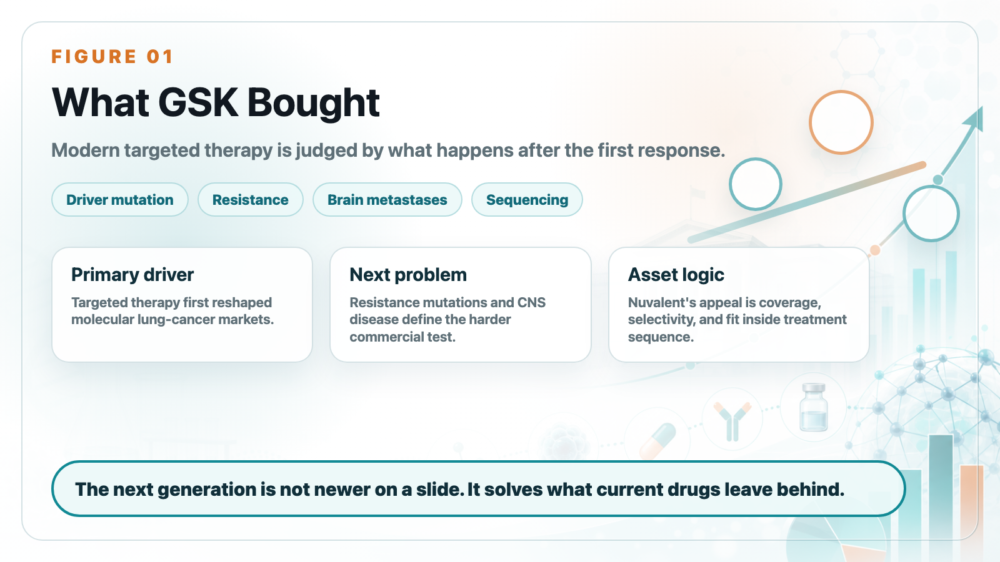
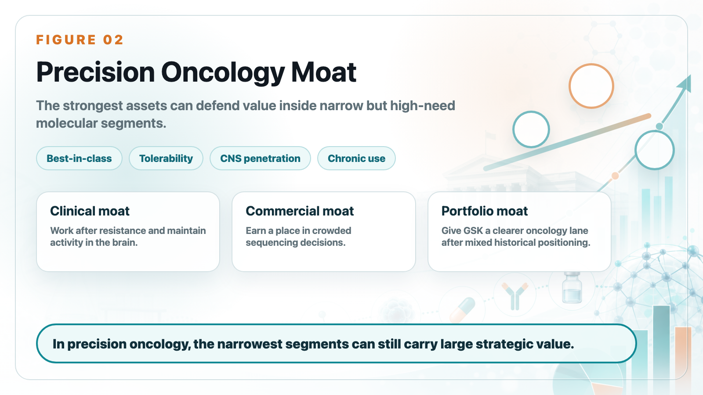
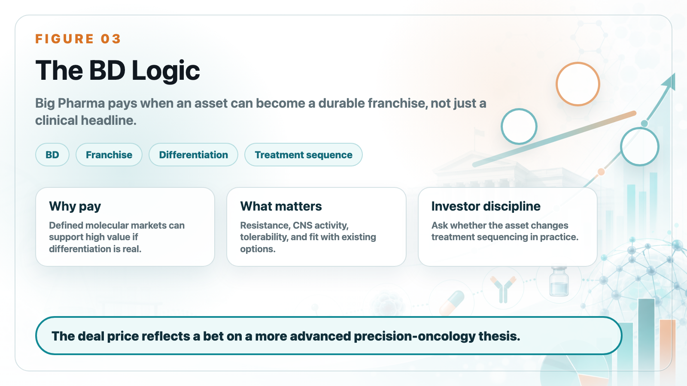

GSK's agreement to acquire Nuvalent for roughly US$10.6 billion should not be read as simply buying three lung-cancer pipelines. The deeper logic is more specific: GSK is buying a position in the next phase of precision oncology.
Share this analysis
Send this article to readers who follow biotech, company strategy, and capital-market signals.
Lung cancer has already been transformed by targeted therapies. EGFR, ALK, ROS1, MET, RET, NTRK, and other drivers have turned subsets of non-small cell lung cancer into molecularly defined markets. But targeted therapy creates its own next problem. Patients respond, then resistance emerges. Many also develop or already have brain metastases, which require drugs that can work in the central nervous system.

That is why Nuvalent is strategically attractive. The company's programs are designed around cleaner kinase inhibition, resistance coverage, and CNS activity. In modern lung cancer, a drug is not judged only by whether it hits the primary driver. It is judged by whether it can cover resistance mutations, reduce off-target toxicity, maintain activity in the brain, and fit into a treatment sequence that is already crowded.
This is the business meaning of "next generation." It does not mean a newer molecule on a slide. It means a molecule that solves problems left by existing products.

For GSK, the deal also reflects a broader portfolio strategy. The company has been trying to strengthen oncology after years of mixed positioning. Nuvalent gives GSK a clearer way to participate in precision lung cancer, an area where commercial value can be high if the asset becomes best-in-class or meaningfully differentiated.
The price is large, but the logic is understandable. Big Pharma is willing to pay for assets that can become durable franchises in well-defined molecular segments. The most valuable assets are not always the broadest. Sometimes they are the ones that answer the hardest treatment-sequencing questions.

For biotech investors, the Nuvalent deal is a reminder that BD value is often created by solving the second problem, not the first. The first problem was making targeted therapy work. The second is making it work after resistance, in the brain, and with tolerability good enough for chronic use.
That is what GSK is paying for. Not just pipelines, but a more advanced precision-oncology thesis.
This article is intended for industry research and knowledge sharing only. It does not constitute investment, medical, fundraising, or individual stock advice.
Cite this article
For decks, research notes, or media references, cite Drugnews with the canonical article URL.
Drugnews Editorial Team. "GSK's US$10.6 Billion Nuvalent Deal Is Really a Bet on Resistance and Brain Metastases." Drugnews, Jun 19, 2026. https://drugnews.com.tw/articles/2026-06-19-gsk-nuvalent-lung-cancer-resistance-brain-metastasis-en.html
Original Article
Read This Next
Continue with the most relevant Drugnews analysis on the same theme.

GSK Goes Big: The $10.6B Nuvalent Deal Is Not Just a Lung-Cancer Pipeline Buy
GSK's $10.6 billion all-cash acquisition of Nuvalent is more than a late-stage lung-cancer pipeline deal. It is a strategic attempt to rebuild oncology, buy time before major revenue pressure, and regain a seat at the precision-oncology table.

Pfizer's ADC Bet: Why 3SBio's PD-1/VEGF Bispecific Has Become the New Pivot
After a Phase III setback for sigvotatug vedotin, Pfizer's $43 billion Seagen ADC bet is increasingly tied to whether 3SBio's PD-1/VEGF bispecific can become a new immuno-oncology combination backbone.

Big Pharma's $134 Billion M&A Rush: What Is It Really Buying?
In the first half of 2026, Big Pharma's biotech M&A pace has accelerated sharply. The real question is not why large drugmakers have cash, but why they are suddenly less willing to wait.